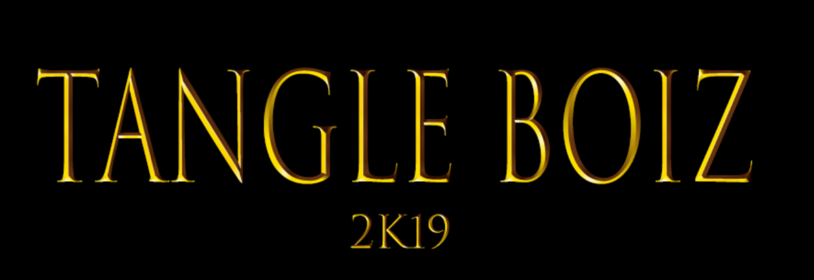
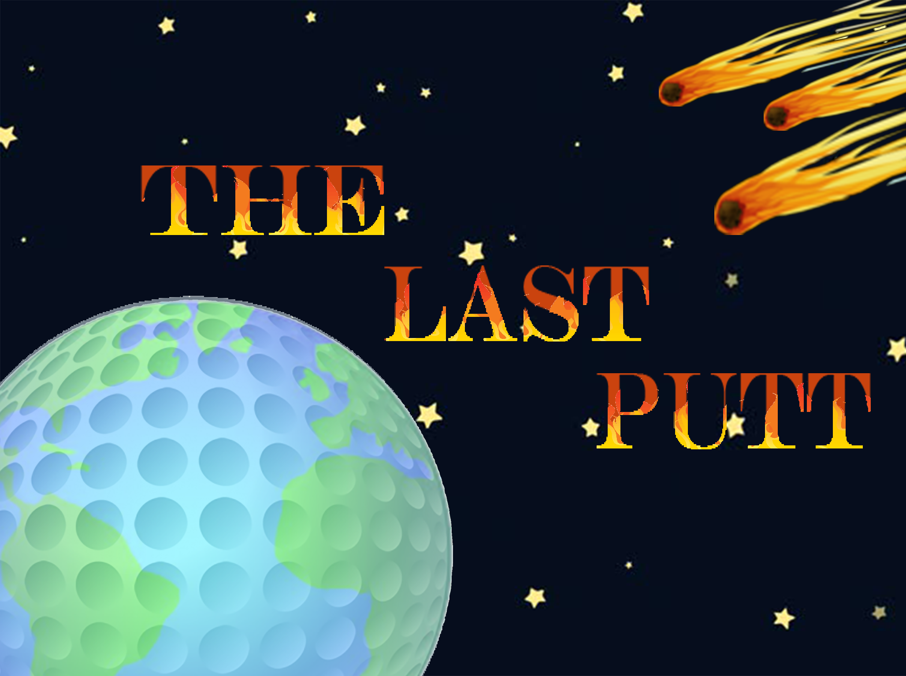
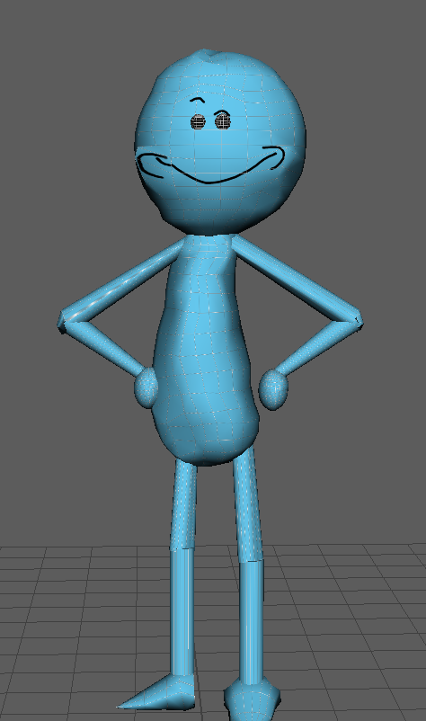
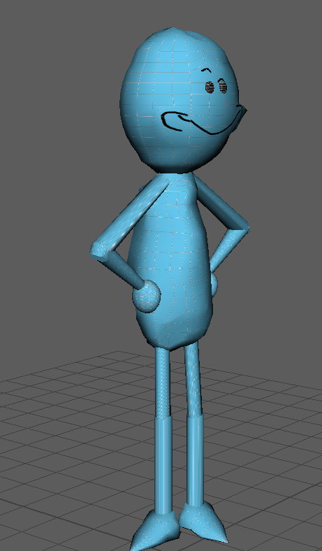
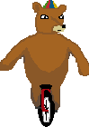
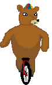

My Game Library
Click each game title to be taken to its Github Page
Unity:A Pirate's DuelA Pirates Duel was a group project I undertook with several classmates during a Peterborough Game Jam, and is a networked 1v1 pirate battle. The game takes place atop a ship in a pirate fleet, and requires the player to kill their opponent using slashes and blocks. |
Android:Get ToastedGet Toasted is my first large Android game, starring a very enthusiastic piece of toast on his journey across the kitchen table. The game functions as a infinite runner, with enemies increasing in speed, with a variety of different enemies, from jalapenos to pancakes. |
|---|---|
Unreal:Unbearable Log LeapAn Unreal title that I produced my own character art for, Unbearable has the player jump on spinning logs attempting to reach the opposite end of the level. 3 total Levels. |
Phaser/Html5:TangleBoizClick here to play A game designed in the HTML framework Phaser 3, stars a character who travels through up to 3 dark mazes looking for the exit. Clicking on a spot in the maze causes the player to travel towards it. |
IOS:The Last Putt -->My First large IOS project, tapping and dragging across the screen allows the player to fire the golf ball at varying power, 18 courses available. |
Unity:NomNDropMy First game designed in Unity, meant to demonstrate Unity's physics, moving back and forth allows the player to collect different size animals. Larger animals than the player will cost a life. |
Unity:Joust RecreatedVery early in my Game Development Education, I attended the SemiAnnual Peterborough Game Jam. I was still unfamiliar with unity, yet was able to create a very solid recreation of the arcade classic Joust. At the time of first making it the main jousting mechanic was unfinished, yet enemies would be killed and new wave would spawn after they all died, incrementing score as they die. |
Unity:Got The TouchDuring my internship for my eduction at TriOS, i worked for my collegue and teacher Richard Als,as well as another intern on a mobile title called Got The Touch. At present the game has yet to be released, yet soon will be launched on both android and IOS. The goal of the game is to keep up with the speed and tap corresponding circles that match what the game indicates. The game was an excellent title that i learned much from, serving as a crash course in the game development life cycle from design to post production |
Art/Models
Maya:Mr Meeseeks A novice 3D depiction of Mr Meeseeks from the Rick and Morty cartoon series, designed in Maya. "Hi i'm Mr Meeseeks look at MEEEE!!" |
Pixel Spritesheet:Player Unbearable log Leap Art designed for the Player character of my 2D Sidescroller made in Unity called Unbearable Log Leap. |
|---|---|
Sound Assets
SoundScape:EscapeThis soundscape tells the story of two people, a man and a woman, who are running from a terrifying beast. The beast eventually catches them however ( The beast's voicelines are from World of Warcraft,while the music is from the film Clash of the Titans). |
|---|